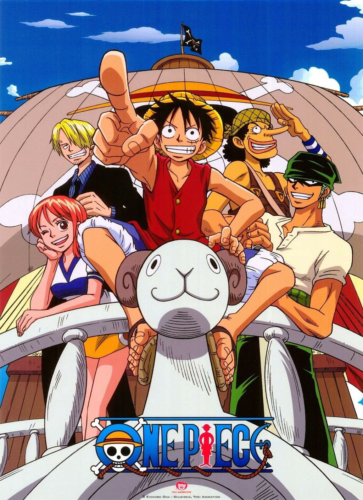

Animes Marcantes

One Piece
Monkey D. Luffy parte em uma jornada para se tornar o Rei dos Piratas. (1999)

Hunter x Hunter
Gon Freecss deseja encontrar seu pai e, para isso, se torna um Hunter. (1999)

Jujutsu Kaisen
Yuji Itadori, após ingerir um dedo amaldiçoado, é lançado ao mundo do jujutsu, onde enfrenta espíritos malignos. (2020)

Vinland Saga
Thorfinn, um jovem guerreiro viking, busca vingança pela morte de seu pai, mergulhando em batalhas e dilemas morais durante a era dos vikings. (2019)

Death Note
Light Yagami encontra um caderno que mata qualquer pessoa cujo nome seja escrito nele, iniciando uma guerra de intelecto contra o detetive L. (2006)

Attack on Titan
A humanidade enfrenta titãs em uma luta pela sobrevivência. (2013)

Demon Slayer
Tanjiro enfrenta onis para salvar sua irmã. (2019)

Fullmetal Alchemist
Dois irmãos buscam a Pedra Filosofal após uma tragédia. (2009)